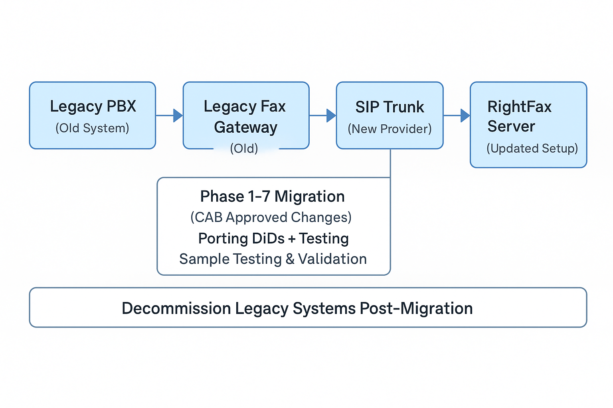

RightFax DiD SIP Migration Project

Duration: May 2024 - Aug 2024
Project Overview: Managed and executed a multi-phase RightFax DiD SIP migration project for a major financial institution, transitioning fax services from a legacy PBX to a new SIP trunk. The migration was carried out across 7 phases over a 3-month period, ensuring a structured and low-risk implementation.
Key Achievements:
- Led the structured migration across 7 phases with formal CAB (Change Advisory Board) approval.
- Coordinated the porting and migration of DiD numbers with the telecom provider.
- Conducted sample testing on migrated numbers to verify end-to-end fax functionality.
- Successfully decommissioned the legacy fax gateway after completing the migration.
Skills:
Project Delivery · SIP Trunking · Regression Testing · Network Troubleshooting · System Migration · Change Management